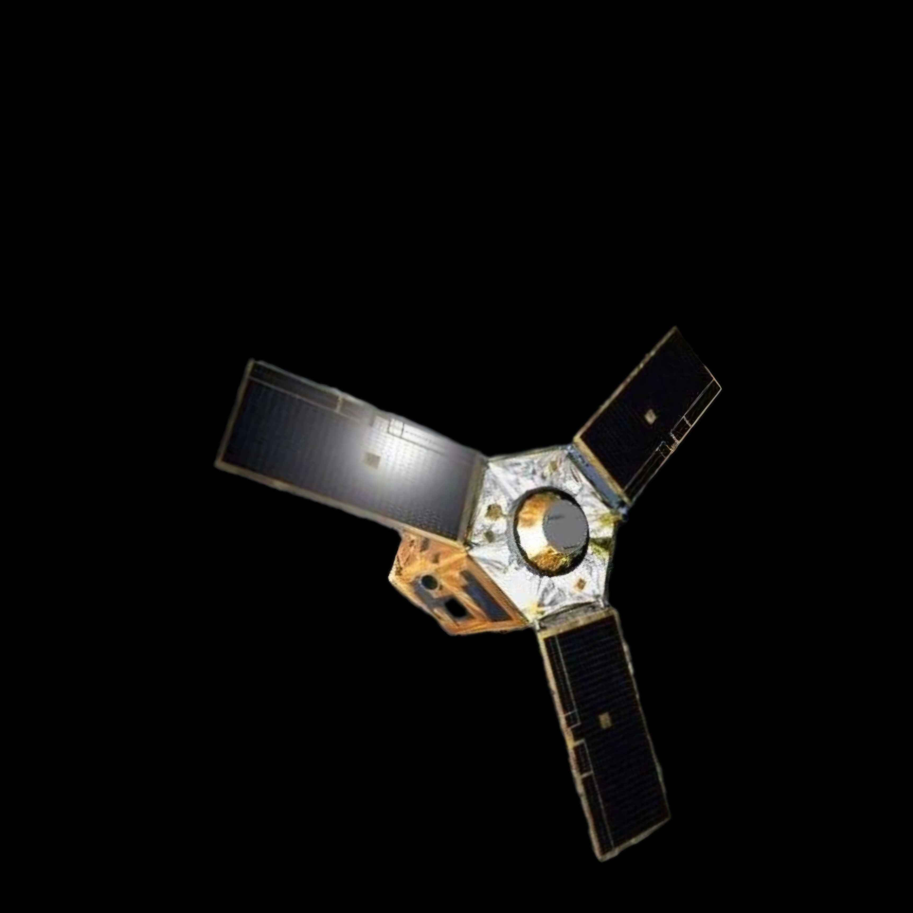

|
L’Afrique développe de plus en plus
son activité spatiale
|
 |
|
Alors que l'espace est principalement dominé par des puissances comme la NASA, l'ESA et la CNSA,
l'Afrique commence à développer son secteur spatial, bénéficiant de la baisse des coûts de production
des satellites. Ces avancées permettent aux pays africains de concevoir des satellites pour garder un oeil
sur le climat, les ressources naturelles et les cultures et s'adapter en fonction des changements.
|